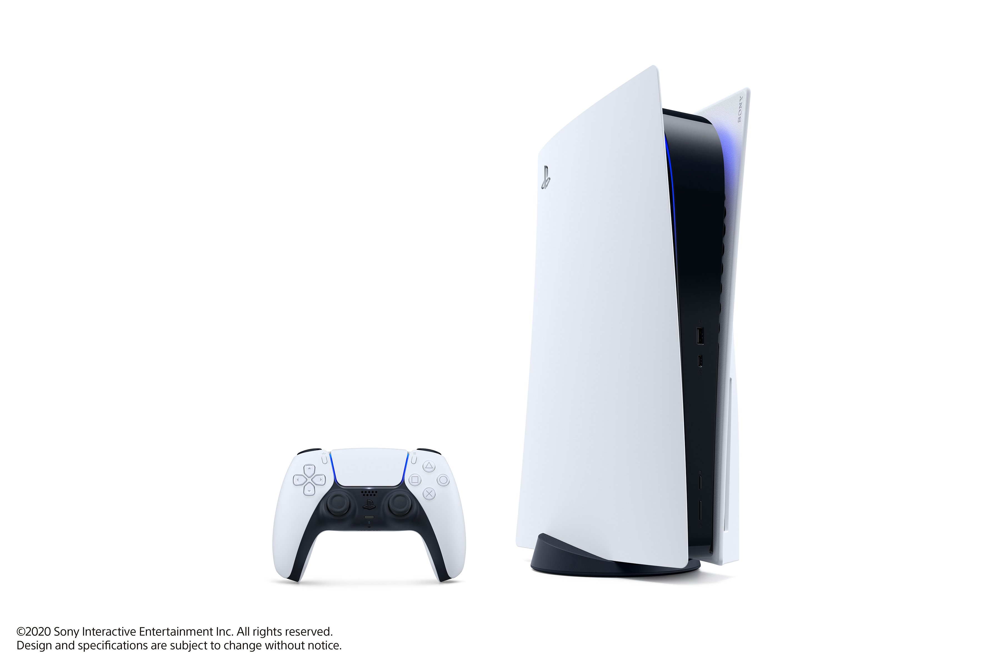

Sony PlayStation 5 (PS5)
Technical SpecsProcessor : AMD 3rd Gen Ryzen 8-core/10-core
OS : Orbis OS
RAM : 8GB
Cores : 8/10
Storage SSD : 512GB / 1TB / 2TB (Speeds upto 17GBps)
Cloud : PlayStation Plus
Body SizeLength : 16-18 inches , Width : 16-18 inches , Height : 2-3 inches
Graphics : AMD RDNA based graphics (with RayTracing)
HDR support : Yes
Game Resolution : upto 30fps 8k upscaled
Review
The wait for the latest PlayStation is almost over. After the launch of PS4 in 2013, it has been 7 years since we hav seen a major redesign. The PS5 was to be launched on the June 4 event, but due to the current situations the date has been postponed. But that does decrease its hype at all. Sony unveiled the controller of the PS5 last month, the DualSense controller. This new controller has a all new design with all new white color, with black thumb sticks.The design looks somewhat similar to the Xbox controllers but has a different styling to it. the slim and angular shape makes it easy to hold. There are lot of improvements in the hardware itself, with new haptic motors the vibrations and effects would feel more realistic than ever. The trigger buttons are also revamped with a new technology which will automatically adjust its triggering action according to the scenario. The triggers can tighten or loosen itself to create a more natural and intuitive experience.
Coming to the console, the actual design of the PS5 isn't reveiled yet but there have been rumors of the design and leaks of the Dev Kit. The new PS5 will have a totally revamped design compared to the previous generations. Speculations suggest the PS% would have angular and sharp design resembling the V of PS V (PS5) rather than a boxy design. But the main reason for the excitement is the hardware itself. The PS5 will be based on the AMD APU probably Ryzen 3rd gen with atleast 8 or 10 cores. The latest AMD processors of the laptop and computer market have shown us the capability of these processors. The APU will be consisting the new AMD Ray-tracing based graphics as well based on the RDNA architecture. This graphics supposedly will be the most advanced in any small factor computing device. Coming to the storage of the PS5, it is going to have a great effect on the performance due to the addition of SSDs. Previously the consoles were totally based on mechanical Hard disks, which resulted in long wait times. But the inclusion of SSDs the games would load in a matter of seconds. Even the SSDs are not the regular ones, instead they are really fast NVME based SSDs that even hasn't launched in the computer market yet. The theoretical speed of this SSD is upto 17GBps which is just light speed in the computer world.
All these improvements and changes are going to change the consoles forever. This is why the Sony PS5 will be the most advanced console as well. And all this goodness would be at a reasonable price of under $700 which is nowhere near to a PC with similar specs ( which costs around $2000+).